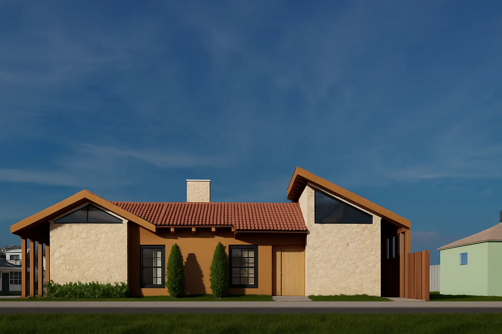

Sobre a arquiteta
Sou Taís Regina Müller, arquiteta. Atuo em São Martinho - RS e online, com foco em residencial contemporâneo e interiores minimalistas, aplicando conceitos de neuroarquitetura para criar espaços que favorecem o bem-estar. Busco qualidade espacial, eficiência e identidade em cada projeto.
- Inscrição no CAU/BR
- Processos BIM e compatibilização
- Atendimento do briefing à entrega
